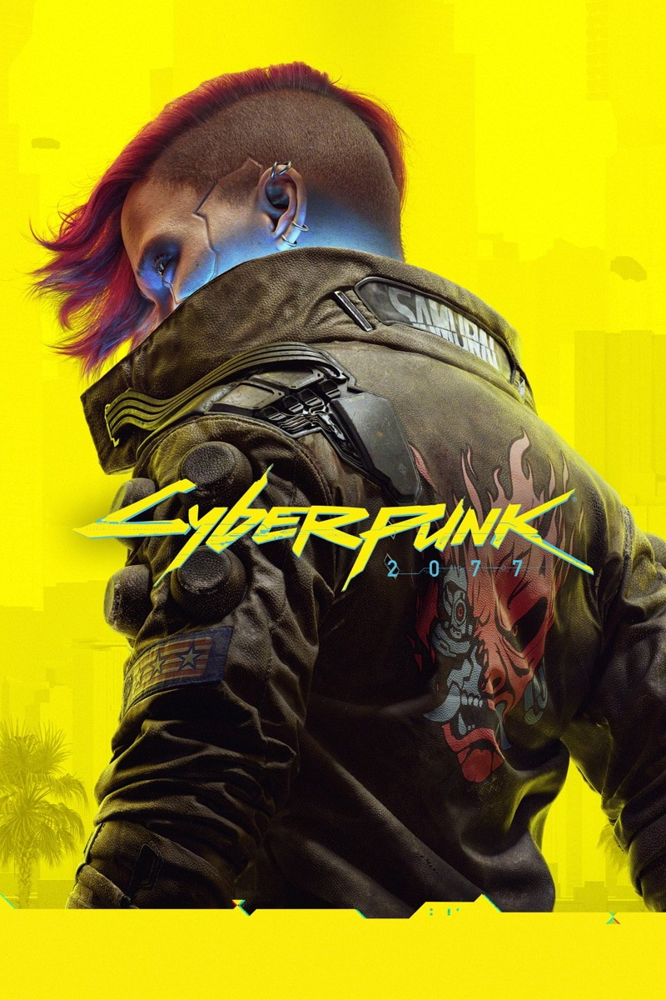
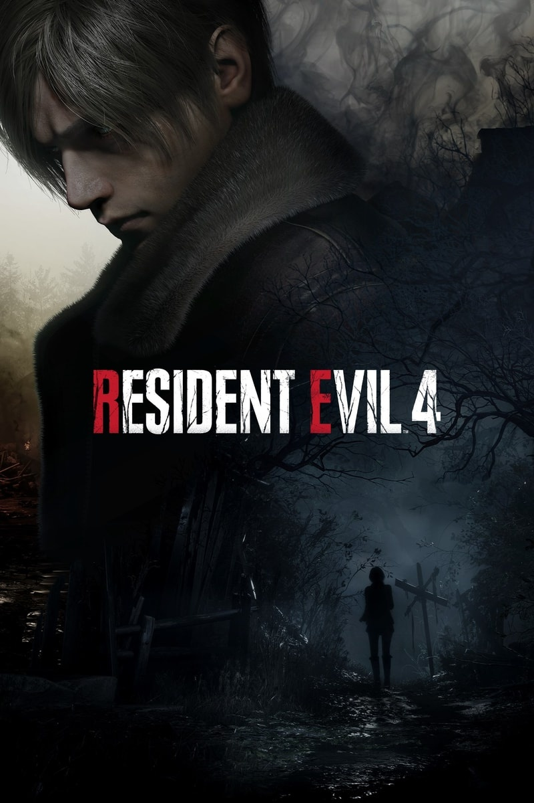

Playstation 5: A nova geração de jogos
O PlayStation 5, lançado em 2020, representa um salto significativo em termos de tecnologia e experiência de jogo, oferecendo gráficos impressionantes, tempos de carregamento quase instantâneos e recursos inovadores. O PlayStation 5 representa o futuro dos videogames, definindo novos padrões para a indústria. Seu sucesso consolidou a posição da Sony como líder no mercado e abriu caminho para uma nova era de jogos mais imersivos e realistas.
Por que ele foi tão importante?
- Jogos exclusivos: O PS5 possui uma biblioteca de jogos exclusivos de alta qualidade, como Demon's Souls, Ratchet & Clank: Rift Apart e Horizon Forbidden West.
- Experiência de usuário aprimorada: A interface do PS5 é mais intuitiva e rápida, facilitando a navegação e o acesso aos jogos.
- Novas tecnologias: O PS5 introduziu novas tecnologias, como o Tempest 3D AudioTech e o Activity Cards, que aprimoram a experiência de jogo.
Jogos


Algumas curiosidades:
- O PS5 está disponível em duas versões: com leitor de disco Blu-ray e digital (sem leitor de disco).
- O jogo mais vendido para o PS5 até o momento é o Marvel's Spider-Man: Miles Morales.
- O PS5 é compatível com o PlayStation VR, mas é necessário um adaptador para conectar o headset ao console.